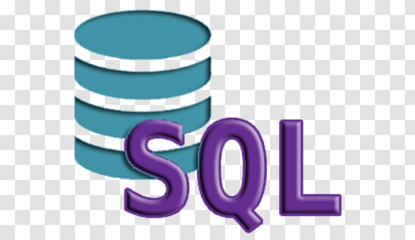
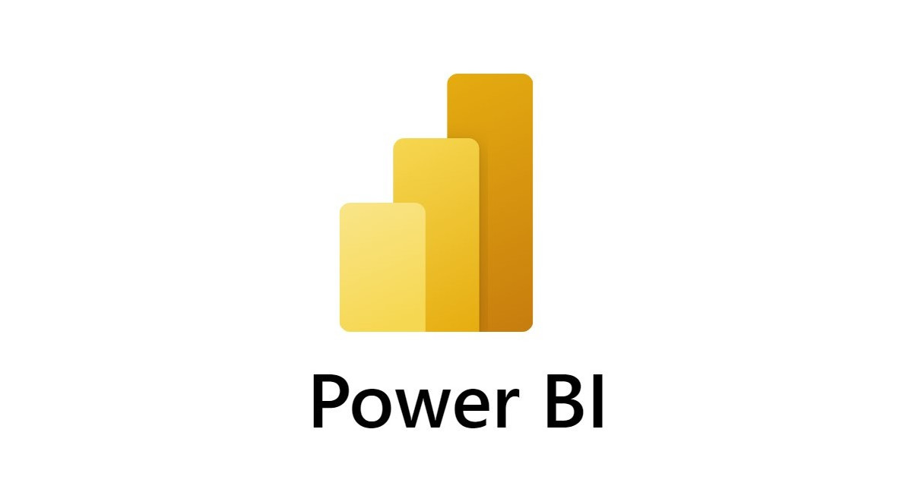

Portfolio Data Analyst
Transformez vos données en décisions stratégiques.
J’analyse, structure et exploite des données complexes pour produire des insights clairs dans des environnements exigeants.
Qui suis-je ?
De la donnée à la décision.
Avec une double formation en sciences de la santé puis en science des données, j’aborde chaque problématique avec rigueur et sens analytique du contexte métier. J’analyse, structure et exploite des données sur l’ensemble du cycle data, de la préparation à la modélisation, en veillant à restituer les résultats aux équipes métiers avec une approche claire et un storytelling adapté. Mon objectif : produire des résultats clairs, fiables et directement exploitables.
Ma formation
BUT Science des Données
2023 - 2025IUT Paris Rives de Seine | Université Paris Cité
- Analyse de données, statistiques, machine learning
- Visualisation et interprétation de données
- Projets concrets (environnement médical, enquêtes réelles)
Parcours Santé
2022 - 2023Université Paris Cité
- Bases scientifiques en biologie et physiologie
- Développement d’un raisonnement analytique
Compétences et outils
Des compétences data pour produire des décisions concrètes.
Un ensemble d’outils techniques au service de la décision dans le cadre de problématiques data concrètes.
Outils d’analyse

SQL
Power BI- Power Query
- Excel avancé
- Microsoft Azure
- Git
Langages
- Python avec Pandas, Matplotlib, PySpark et Scikit-learn
- R
- SAS
Reporting et dashboards
- Création de tableaux de bord interactifs
- Suivi de KPI et performance
- Analyse de données métier
- Reporting décisionnel
Analyse statistique
- Analyse descriptive et inférentielle
- Tests statistiques (Student, Fisher)
- Interprétation de résultats
- Aide à la décision basée sur données
Data et machine learning
- Nettoyage et préparation de données
- Feature engineering
- Modélisation (régression, classification)
- Évaluation de modèles
MLOps
- Déploiement de modèles (bases)
- Suivi de performance
Études de cas
Projets data & analyses
Des projets concrets, conçus pour répondre à des problématiques réelles et produire des résultats exploitables.
Expériences professionnelles
Des expériences concrètes en analyse de données.
Des expériences appliquées à des problématiques réelles, avec un impact concret sur l’analyse et la prise de décision.
- Analyse de données épidémiologiques pour étudier l’impact des pesticides sur les cancers pédiatriques
- Contrôle qualité et structuration de bases de données de santé publique
- Production d’analyses statistiques pour identifier des tendances significatives
- Analyse des données clients pour identifier des comportements d’achat
- Suivi et interprétation de KPI commerciaux (ventes, panier moyen, fréquence)
- Création de reportings pour accompagner les équipes marketing
- Analyse des performances produits et compréhension du comportement client
- Gestion du service après-vente et remontée d’insights terrain
Centres d’intérêt
Ce que ces pratiques m’ont appris.
Boxe
Pratique régulière qui développe discipline, gestion de l’effort et capacité à rester concentré sous pression.

Piano
Pratique du piano, qui demande rigueur, précision et constance dans l’apprentissage.
Cinéma
Intérêt pour le cinéma et les œuvres visuelles, avec une attention particulière aux récits et aux dynamiques humaines.

Découverte de nouvelles cultures
Intérêt pour les cultures et les environnements différents, avec une curiosité pour les modes de vie et les perspectives variées.
Discutons de votre besoin.
Je suis actuellement à la recherche d’un stage ou d’une alternance en data analyse. Je suis également disponible pour échanger sur des projets data, d’analyse ou de visualisation.
Je reviens vers vous dans les plus brefs délais.